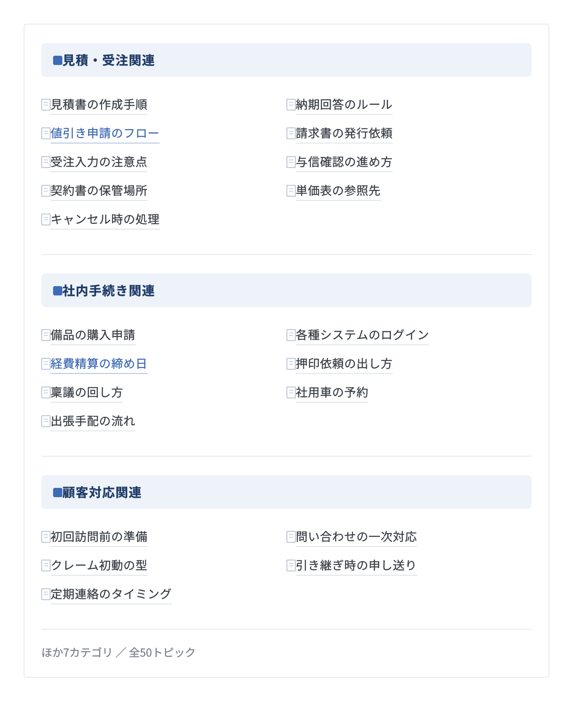
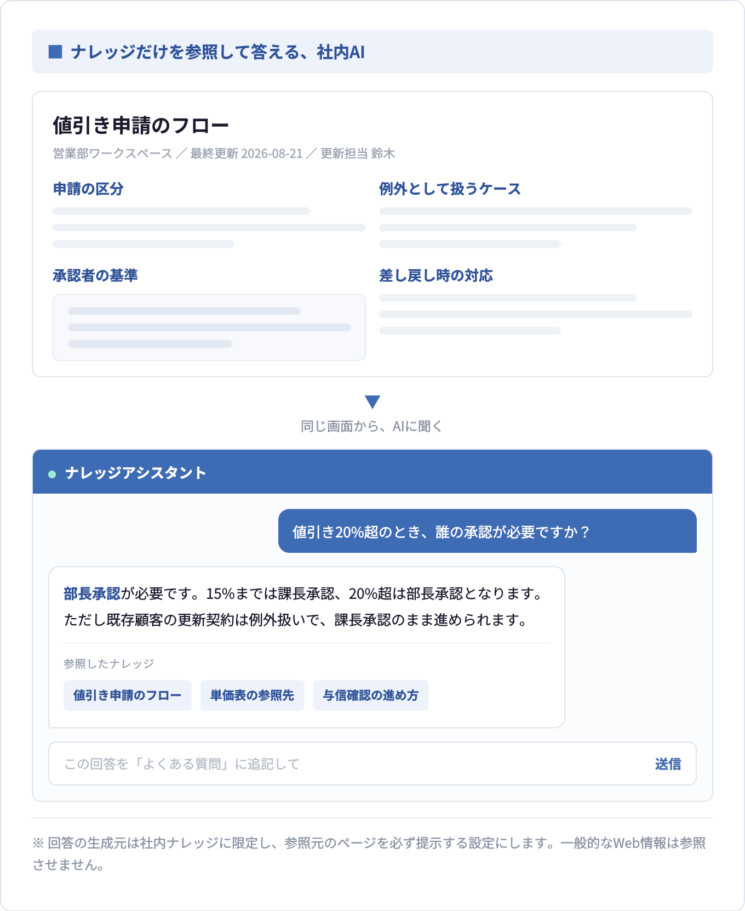
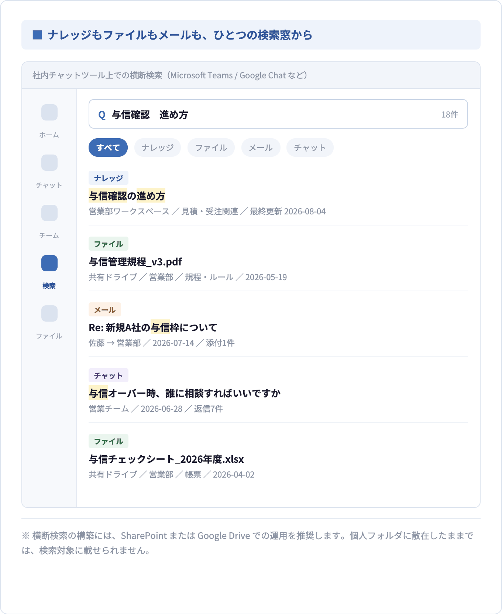
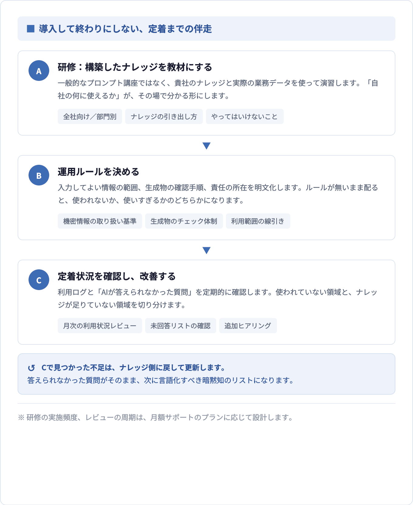
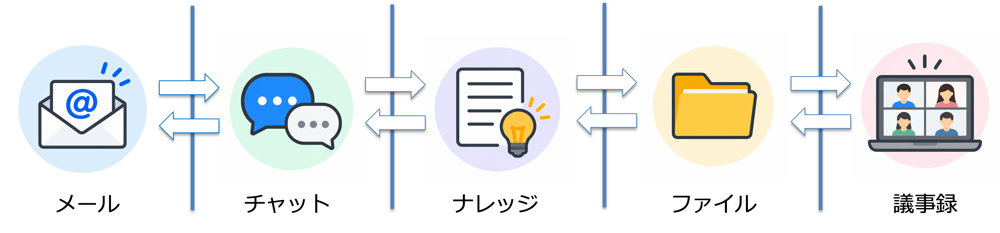
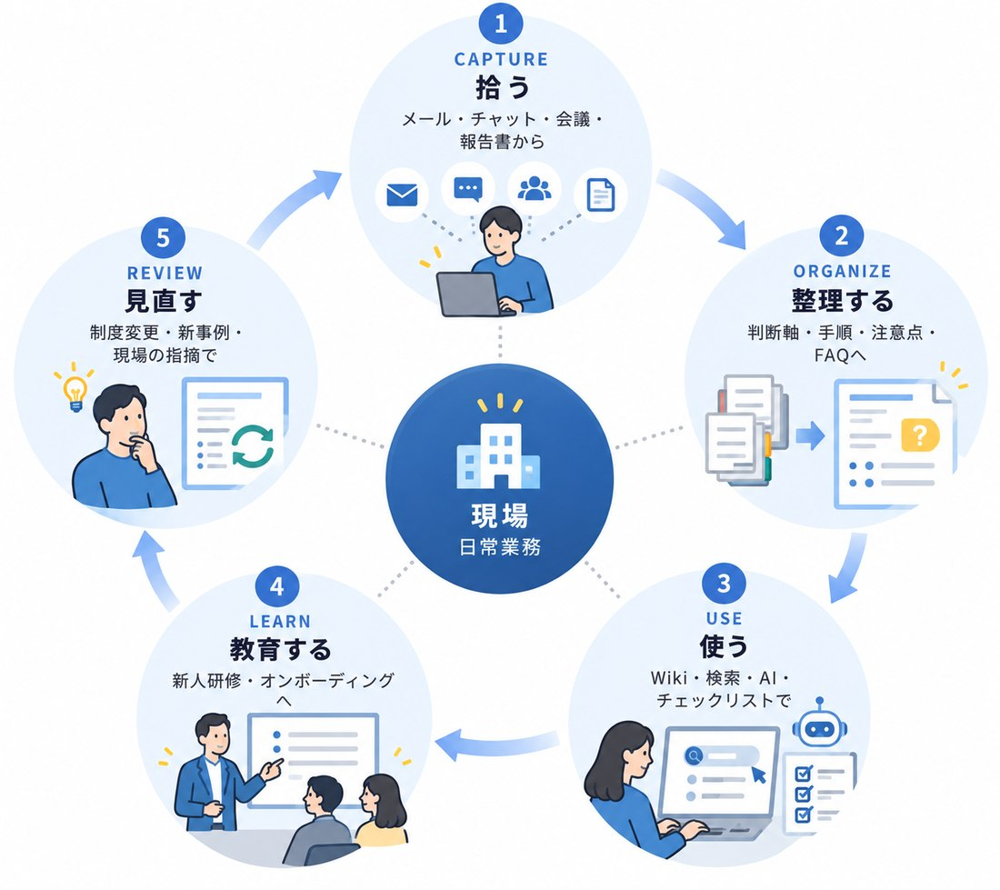

Services
What we do
新しいシステムを導入しても、マニュアルを作っても、研修をしても、現場で使われなければ意味がありません。
S.sentiaは、会社のルール・マニュアル・ドキュメント・現場の知識を整理し、日常業務の中で「探せる・使える・更新される」仕組みへ変えていきます。
Microsoft 365、Notion、Google Workspaceなど、すでにお使いの環境を活かしながら、「導入」と「現場定着」の間を支援します。
Problem
導入したときは、うまくいくはずでした。多くの企業で、時間が経つにつれて少しずつ、こんな変化が起きています。
新しいITツールを導入。ベンダーから基本的な使い方の説明は受けたが、自社の仕事でどう使えばいいかは、まだ誰も分かっていない。
結局、使っているのは一部の社員だけ。現場向けのマニュアルを、自分たちで作り始める。
新しい事例やトラブル対応が、メールやチャットの中に埋もれていく。マニュアルには載っていない判断が増えてくる。
作ったマニュアルの内容が、少しずつ古くなっている。研修で教えている内容ともズレが出てきた。
結局、詳しい人に聞くのが一番早い——導入前と、あまり変わらない状態に戻っている。
Position
IT担当者やシステムベンダーは、システムの選定・導入・設定・技術支援のプロフェッショナルです。一方で、導入したシステムを「自社の仕事でどう使うか」、現場向けにどんな情報を載せるか、誰が更新するか、新しい事例をどう蓄積するかは、企業側に委ねられていることが少なくありません。S.sentiaは、その間に入ります。
Input
IT担当者・ベンダー
システム選定・導入・設定
Bridge
S.sentia
業務整理・ナレッジ化・現場への実装・運用設計
Output
現場
日常業務で使う・改善する・知識を残す
システムそのものではなく、
システムの上で動く「仕事の仕組み」をつくる。
Service
マニュアル、規程、FAQ、ファイル、メール、チャットなどを確認し、現場が仕事をするために必要な情報を整理します。
「何をするか」だけでなく、「なぜそうするのか」「どんな場合に判断が変わるのか」まで整理します。ベテラン社員へのインタビューなどを通じて、判断基準・例外対応・注意点・仕事のコツを言語化します。
WHAT
何をするか
作業の順序と、押さえるべき勘所。
WHY
なぜそうするのか
その手順が存在する背景と目的。
IF
どんな条件で変わるか
例外、分岐、顧客ごとの注意点。
整理したナレッジを、社内ポータル・Wiki・FAQ・チェックリスト・検索環境・生成AIが参照するナレッジなど、現場が日常的に使える形へ実装します。新しいシステムを増やすことを前提にせず、Microsoft 365、Notion、Google Workspaceなど、現在利用している環境を踏まえて設計します。

業務に必要なフロー・ルールを一箇所に集約し、いつでも瞬時にアクセスできる環境を構築します。

ナレッジソースだけを参照して、生成AIが検索・回答できる環境を構築します。

ナレッジだけでなく、ドキュメント、メール、チャットからも横断検索ができる環境を構築します。
※ SharePoint、Google Driveでの構築を推奨します。

構築したナレッジを教材にした研修を実施し、組織として使い続けるための運用方法まで支援します。
仕組みは「作って終わり」ではありません。新しい質問・事例・制度変更を拾い、ナレッジを見直し、古い情報を整理し、必要に応じて研修やオンボーディングへ反映する運用まで設計します。

メール・チャット・ファイル・議事録から新しい事例を拾い続け、ナレッジを更新し続ける仕組みをつくります。
Knowledge Cycle
現場で質問や事例が発生するたびに、それを拾い、整理し、使える形にし、教育に反映し、見直す。S.sentiaが設計するのは、この循環が止まらない仕組みです。

Technology
会社によって、すでに使っている環境も、社員のITスキルも、情報管理の方法も異なります。S.sentiaでは、特定の製品ありきではなく、既存環境と課題に合わせて仕組みを設計します。
Microsoft 365
SharePoint・Teams・OneDrive・Copilot・Power Automate
Microsoft 365をすでに導入している企業に適した設計。
Notion
Wiki・Database・Notion AI
柔軟なWiki・ナレッジデータベースを構築したい組織に適した設計。
Google Workspace
Drive・Gmail・Chat・Gemini
Google環境を中心に業務を行っている組織に適した設計。
Microsoft 365 Example
現場の相談を、組織の知識へ。
「こういう場合はどう対応すればいい？」——日々の相談がTeams上で生まれます。
その場で流れてしまう相談を、後から参照できる形でSharePointに蓄積します。
蓄積した相談を、既存のマニュアルや過去事例と突き合わせながら整理します。
整理された内容は、手順・判断基準・注意点として、現場がいつでも参照できる形になります。
蓄積されたナレッジは、新人教育や研修コンテンツにもそのまま活用できます。
※ Microsoft 365は一例です。Notion、Google Workspaceなど、既存環境に合わせた設計が可能です。
Benefits
情報検索
01
探す時間を減らす
PDF・フォルダ・メール・チャットを探し回らず、必要な情報へアクセスできます。
06
AIを実務で使える状態にする
「何を聞けばいいか分からない」状態から、自社情報を参照して仕事を支援する状態へ。
業務遂行
02
ベテラン依存を減らす
判断基準・例外対応・経験を、個人ではなく組織に残します。
05
管理職への質問を減らす
社員が自分で調べ、判断できる範囲を増やします。
ナレッジ蓄積
03
マニュアルを更新し続ける
現場で発生した新しい事例を、ナレッジ候補として蓄積します。
教育
04
教育を仕組み化する
蓄積したナレッジから、研修・オンボーディング教材を作成します。
Microsoft 365、Notion、Google Workspaceなどを導入したものの、「現場で定着しない」「情報が整理されない」「マニュアルが更新されない」といった課題があれば、現在の環境と業務を確認しながら、どこから改善できるか一緒に整理します。
※ 無料相談に費用は一切かかりません。オンライン（Google Meet / Microsoft Teams）でも承ります。